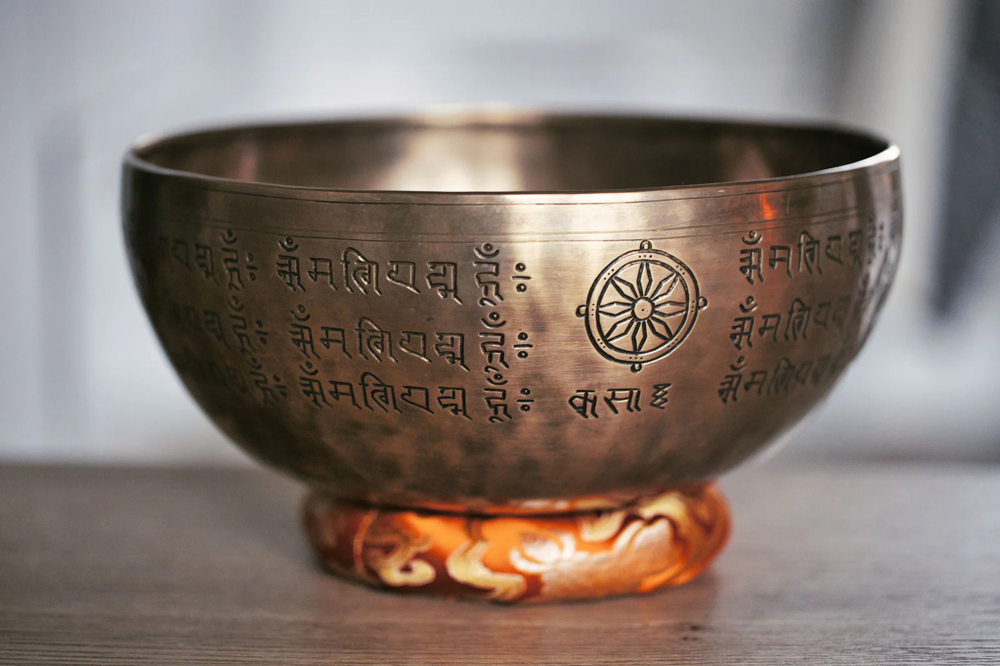

Énergéticien à Buzançais
Sylvie Tranchant
Une séance dure environ 1 h à 1 h 30 et se déroule dans un espace d’écoute, d’échange et de bienveillance.
LieuBuzançais, 36500
Centre-Val de Loire
Rendez-vous07 45 04 61 11
Sur rendez-vous

01L’approche
Ma façon d’accompagner
Je vous propose un échange téléphonique découverte de 30 minutes, sans engagement.
Mon approche vise à vous aider à retrouver un apaisement intérieur lorsque le stress, les émotions ou les épreuves de vie deviennent trop lourds à porter. J’adapte ensuite la séance à votre rythme et à vos besoins du moment, dans le respect de ce qui est juste pour vous.
Ici, la phrase qui vous ressemble : ce que vous voulez qu’on ressente en arrivant chez vous.
02La séance
Le déroulé d’une séance
- I
Vos objectifs
Chacun évolue à son rythme, mais l’objectif de mon accompagnement reste le même : vous aider à relâcher ce qui pèse, retrouver un équilibre intérieur plus stable et avancer avec davantage de sérénité, de confiance et de fluidité.
- II
Le suivi
Ce que l’accompagnement peut vous apporter Au fil des séances, les personnes que j’accompagne décrivent souvent un apaisement intérieur plus profond, un mental moins envahissant, davantage de clarté dans leurs choix et un regain d’énergie pour avancer dans leur vie.
03Ce que ça peut apporter
Un mieux-être, à votre rythme
- 01
Gestion des émotions
Apprendre à accueillir ce que vous ressentez, à votre rythme.
- 02
Gestion du stress
Retrouver du calme dans votre quotidien.
- 03
Équilibre
Prendre soin de votre équilibre, au fil des séances.
- 04
Sérénité
Retrouver un état de calme et d’apaisement.
Les accompagnements proposés relèvent du bien-être. Ils ne remplacent en aucun cas un avis, un diagnostic ou un traitement médical.
04Tarifs
Mes tarifs
| Prestation | Durée | Tarif |
|---|---|---|
| Séance de soin énergétique | 50 € |
Paiement : chèque, espèces ou virement.
Ici, le détail de vos formules
Première séance, suivi, forfaits, bons cadeaux : chaque tarif aura sa ligne, comme vous le souhaitez.

Ici, votre portrait05À propos
Qui suis-je ?
Cet entretien nous permet de faire connaissance, d’échanger sur vos besoins et de voir ensemble si je suis la personne la plus adaptée pour vous accompagner.
Sylvie Tranchant
Ici, les mots de vos consultants
Les avis que vous avez déjà reçus pourront être repris ici, avec votre accord.
06Questions fréquentes
Avant de venir
Combien coûte une séance ?
Séance de soin énergétique : 50 €. Paiement en chèque, espèces ou virement.
Où ont lieu les séances ?
À Buzançais (36500), sur rendez-vous.
Comment prendre rendez-vous ?
Par téléphone, au 07 45 04 61 11.
Les séances remplacent-elles un suivi médical ?
Non. Les accompagnements proposés relèvent du bien-être. Ils ne remplacent en aucun cas un avis, un diagnostic ou un traitement médical.
07Contact et rendez-vous
Un appel suffit
Dites-moi ce qui vous amène, et nous trouvons ensemble le créneau qui vous convient.
07 45 04 61 11Appeler maintenant- Où
- Buzançais, 36500
Centre-Val de Loire - Quand
- Sur rendez-vous
- Paiement
- Chèque, espèces ou virement
- Ailleurs
- Réserver en ligne
Ici, l’adresse exacte de votre cabinet
Avec un plan d’accès et les indications pour venir.